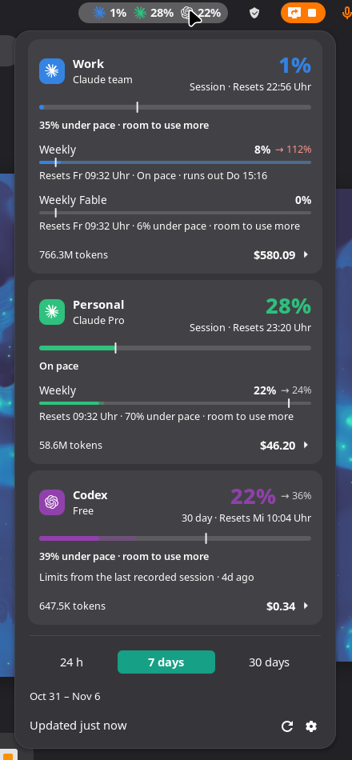
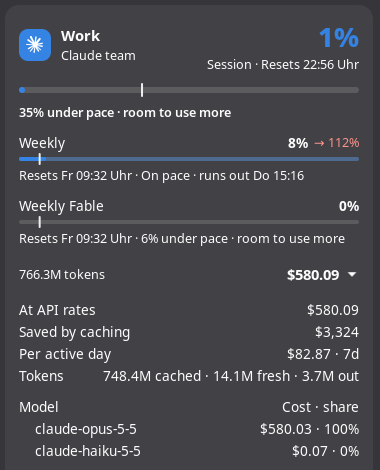

Tripmeter Claude Code & Codex usage limits, pace and API-rate cost in the GNOME top bar
A GNOME Shell extension for Claude Code and OpenAI Codex
that answers both questions from the top panel: how much of your limits is left, and
where the spend actually went — what the same traffic would have cost at API rates,
broken down per model, per skill, per subagent and per MCP tool.
Every other panel extension in this space stops at the first question. This one is for when
“73% used” is not the thing you wanted to know.
Works with Claude Code alone, Codex alone, or both. Everything is read from the session files
already on your machine; nothing is sent anywhere. Tested on GNOME 49 and 50, Wayland and X11,
Arch/Manjaro, Fedora and Ubuntu.


What it shows
Limits — every rolling limit with a bar: Claude's 5-hour session, the weekly limit and
the per-model weekly limits; whatever windows Codex's plan has. The same figures /usage reports
inside Claude Code.
Resets — how long until each limit refills.
Pace — a marker on every bar where an even spread would be by now, so you see
whether there is room to use more or when the limit runs out at the current rate.
Where the week lands — an estimate of the weekly figure at reset if your pace
holds, weighted by your own weekday rhythm.
Several accounts — each Claude Code config directory and Codex home as its own
card, with a name, a colour and an on/off switch (or imported from T3 Code).
Cost at API rates — what the last 24 hours / 7 days / 30 days would have cost
at API list prices, plus what prompt caching saved. A subscription is flat-rate, so this is not
a bill.
Where it went — cost per model, and the share spent under each skill,
subagent and MCP tool.
In the panel — Claude's 5-hour session percentage, the highest limit for other providers, the window's cost, or just
the icon.
Install
Needs GNOME Shell 49 or 50. Download the zip from the
latest release, then go to your Downloads folder:
There are a dozen of these now, so here is an honest table. Feature sets are from
each project's own README, checked in August 2026 — a dash means the README does not claim it, not
that the project cannot do it, and any of these may have moved on since. Corrections welcome as an
issue.
Where the others are ahead, so you can pick properly: AI Usage Bar covers four
more vendors (Z.AI, OpenRouter, DeepSeek, Kimi) and shows credit balances for the API-key ones —
money, just not the cost-of-your-own-traffic kind this column means. Brain Usage
ships a KDE Plasma version and low-quota notifications. Claude Monitor has a macOS
menu-bar app. If limits are all you need and you are on GNOME 45–48, those are the better fit —
this one starts at 49.
What is here and nowhere else is the second half of the question: cost at API list prices for the
last 24h / 7d / 30d, what prompt caching saved, and the split across models, skills, subagents and
MCP tools. No helper CLI, no daemon — it reads the session files directly.
Questions
How do I see my Claude Code usage limits on Linux without typing /usage?
Install Tripmeter. The GNOME top bar then shows the 5-hour session percentage for each account, and the menu has the weekly and per-model limits with their reset times. They are the same figures /usage reports inside Claude Code.
Does it show Codex limits too?
Yes. Codex's limit windows get their own card, read from the most recent Codex session file. Tripmeter works with Claude Code alone, Codex alone, or both.
Do I need an API key, ccusage or another helper?
No. Limits come from the usage call Claude Code itself makes, and tokens and cost come from the session files in ~/.claude and ~/.codex.
Can it track more than one Claude account?
Yes. Each CLAUDE_CONFIG_DIR is its own account with a name, a colour and its own card and top-bar figure.
Is the cost what I pay?
No. It is what the same tokens would cost at API list prices. A subscription is flat-rate, so it is not a bill.
Is there something like CodexBar for GNOME?
CodexBar is a macOS menu bar app. Tripmeter is an independent project that covers the same need on GNOME Shell for Claude Code and Codex. It is GNOME only: no KDE Plasma, Waybar or macOS.